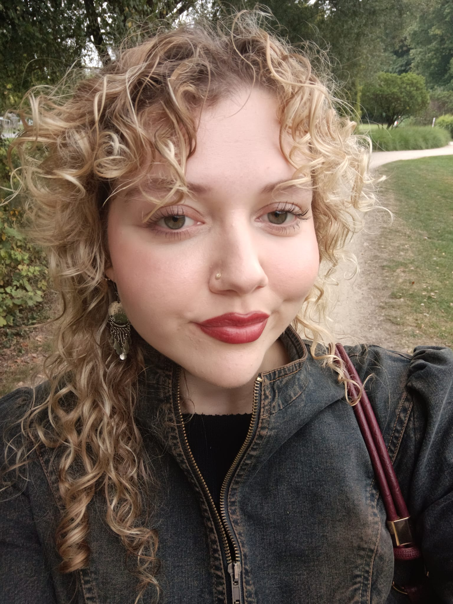

Over mij

Ik ben laatstejaarsstudent journalistiek en leer rapporteren met fotografie, film, audio en longread-teksten. Mijn opdrachten en eigen projecten draaien rond dezelfde thema's — gemeenschap, klimaat en de kleine, trage verhalen die niet altijd de voorpagina halen maar wel de mensen vormen die ze beleven.
Mijn overtuiging is simpel: het verhaal kiest het medium, niet andersom. Sommige waarheden komen het hardst binnen in één foto; andere hebben een paar minuten film nodig, de intimiteit van een stem, of het geduld van een paar duizend woorden. Ik ben nog volop aan het ontdekken — en dat is net het mooiste.
Dit portfolio bundelt opdrachten, stagewerk en eigen projecten. Ik ben momenteel op zoek naar stages, startersfuncties en samenwerkingen terwijl ik mijn opleiding afrond.
Mijn traject
Een korte tijdlijn van mijn studie en het praktijkwerk dat ik onderweg deed — opdrachten, stages en eigen projecten.
Specialisatie in multimediale en documentaire verhalen; dit portfolio is mijn afstudeerwerk.
Gefotografeerd, opgenomen en geschreven voor de digitale desk — mijn eerste ervaring in een echte redactie.
Regelmatig foto-, video- en tekstbijdragen; leerde snel te leveren en een verhaal onder deadline te brengen.
Eerste stappen in verslaggeving, fotografie en het vak om de verhalen van mensen voorop te zetten.
Neem contact op
Opdrachten, projecten, samenwerkingen en koffie — mijn inbox staat open.
hello@liesneirinckx.com